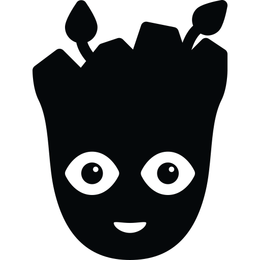

I am Groot
I am Groot. I am groot. I am groot. I AM groot. I Am groot. I am GROOT. I am groot. I am groot. I am groot. I am groot. I am groot. I AM groot. I AM GROOT.
I am Groot →
I am Groot. I am groot. I am groot. I AM groot. I Am groot. I am GROOT. I am groot. I am groot. I am groot. I am groot. I am groot. I AM groot. I AM GROOT.
I am Groot →